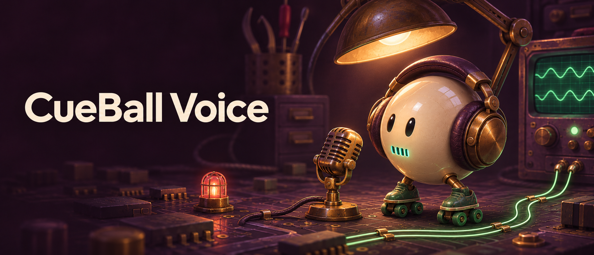
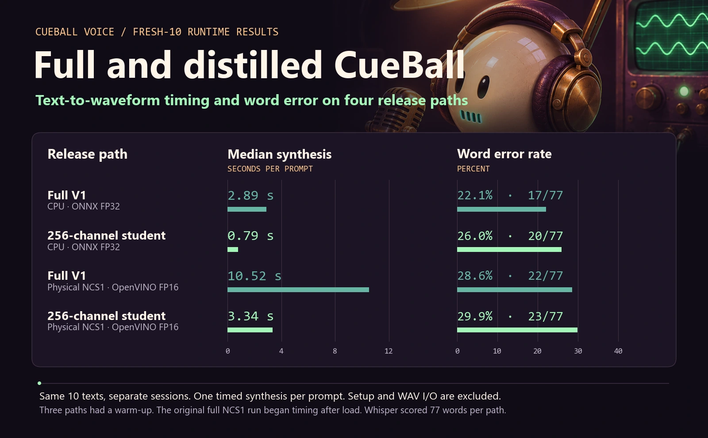

CueBall Voice
Compact English text-to-speech. Both v0.3 NCS1 research builds run three FP16 graphs on the stick. The host handles phonemization, duration expansion, and WAV output.

Listen to the same line
“The blue package goes to the warehouse.”
Student · Physical NCS1
Full · ONNX CPU
Hear CueBall read back vehicle identification checks, work orders, and product codes in the industry gallery.
Matched v0.3 benchmark
All four configurations used the same ten English prompts and a frozen automatic transcription scorer. The NCS1 student reduced median synthesis time from 10.517 to 3.343 seconds, with one additional word edit across 77 reference words. Both NCS1 builds were slower than real time on the recorded workload.
| Build | Model bytes | Median synthesis | Word error |
|---|---|---|---|
| Full NCS1 | 37,873,150 | 10.517 s | 28.6% |
| Student NCS1 | 17,132,414 | 3.343 s | 29.9% |
| Full ONNX CPU | 75,800,899 | 2.886 s | 22.1% |
| Student ONNX CPU | 34,319,280 | 0.790 s | 26.0% |
NCS1 sizes count the FP16 weights, and CPU sizes count the FP32 ONNX graphs. The synthesis timings exclude setup and WAV output.
